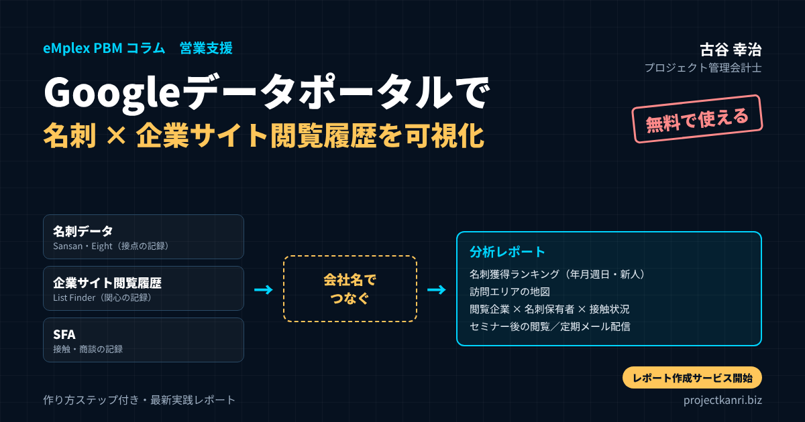
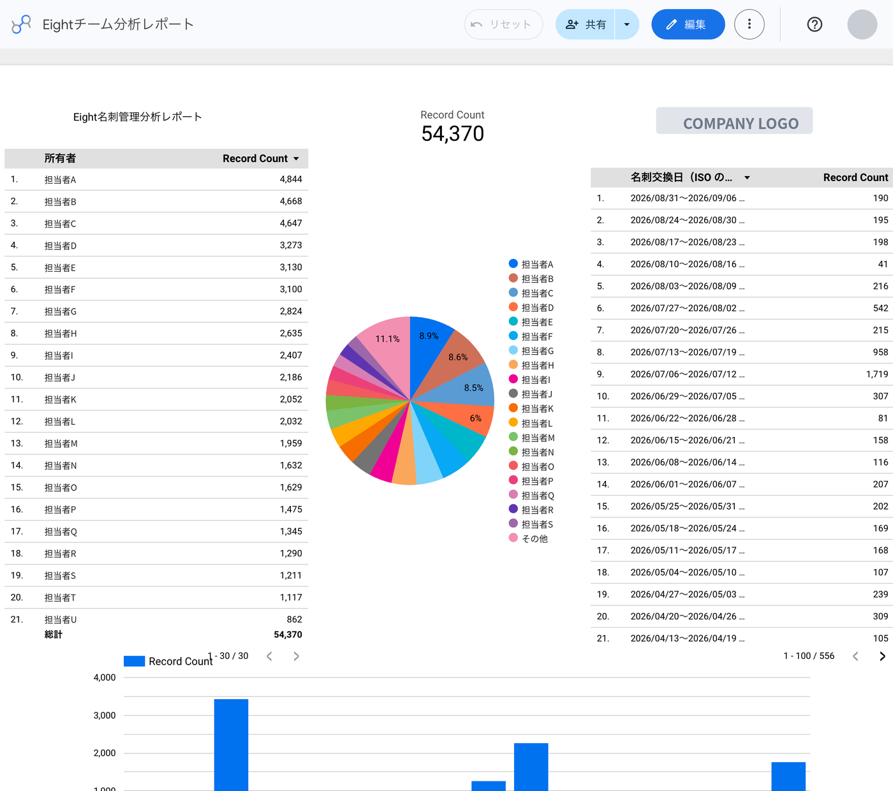
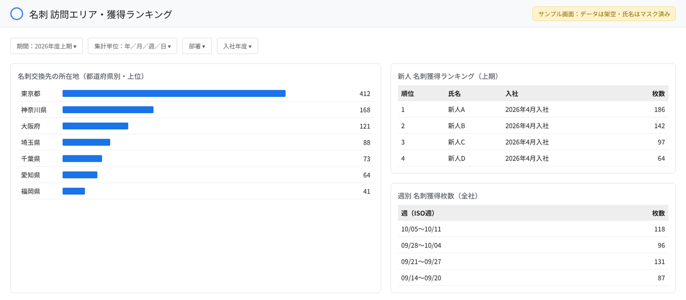
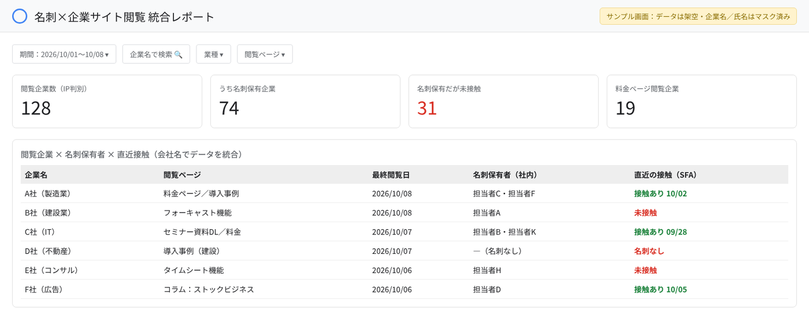

Googleデータポータルで「名刺」×「企業サイト閲覧履歴」を可視化する最新実践レポート―Sansan・Eight×List Finderを会社名でつなぐ作り方ステップ

結論：名刺とWeb閲覧履歴を「会社名」でつなげば、営業の見えなかった景色が見える
プロジェクト管理会計研究所の古谷です。今回は、少し趣向を変えて、私たちが社内と支援先で実践している営業データの可視化の取り組みをご紹介します。テーマは、Googleが無料で提供しているBIツール「データポータル」を使って、「名刺」のデータと「企業サイトの閲覧履歴」のデータをつなぎ、営業活動を見える化する方法です。
最初に結論を申し上げます。名刺管理サービスには、誰と、いつ、どこで出会ったかという「接点の記録」があります。MA（マーケティングオートメーション）ツールには、どの会社が、いつ、自社のWebサイトのどのページを見たかという「関心の記録」があります。この二つは、多くの会社で別々のシステムに眠ったままです。しかし、両者を「会社名」という共通の鍵でつなぐと、「名刺を持っている会社が、今まさに料金のページを見ている。しかし、社内の誰も最近連絡を取っていない」といった、営業にとって最も価値のある情報が浮かび上がります。
この記事の要点
- データポータル：Googleの無料BIツール（旧Looker Studio。2026年4月にData Studioへ名称変更）
- つなぐデータ：Sansan・Eightの名刺（接点の記録）×List Finderの企業サイト閲覧履歴（関心の記録）×SFA
- つなぎ方：会社名（または法人番号）をキーにしたリレーショナルな設計と、表記ゆれの名寄せ
- 見えること：名刺獲得ランキング（年月週日・新人）、訪問エリア、閲覧企業×名刺保有者×接触状況、セミナー後の閲覧
- 定着の鍵：定期的なメール配信でレポートを届け、会議の中心に置く。レポート作成サービスも開始
しかも、それを実現するのに、高額なBIツールや大がかりなシステムの開発は必要ありません。名刺管理サービスとMAツールからデータを書き出し、Googleスプレッドシートに置き、データポータルで「会社名」をキーに統合する。グラフや表、地図を並べ、定期的にメールで配信する。ここまで、無料の範囲で実現できます。
私たちは、名刺管理にSansanとEightを、MAにList Finderを活用しています。本稿では、実際に作成しているEightの名刺分析レポートの画面（個人名と会社名はマスクしています）と、サンプル画面を交えながら、データポータルの基本的な使い方から、名刺獲得ランキング、訪問エリアの把握、企業サイトの閲覧履歴との統合、セミナー後のメールでの閲覧の追跡、SFAとの連携、定期的なメール配信まで、実践のステップを順にお伝えします。
そして、本稿の最後で、この度スタートした新しいサービス、「名刺×Web閲覧 分析レポート作成サービス」についてもご紹介します。自社でここまで作り込む時間がない、という企業のために、私たちがレポートの設計から作成、運用までを支援するサービスです。
私自身、エンプレックス（現SCSK）でITCRMのソフトウェアの事業に携わっていた頃から、顧客との接点のデータをどう経営に生かすかを考え続けてきました。当時は、こうした分析を実現するには、大がかりなシステムの開発と、高額なBIツールが必要でした。今では、無料のツールと、少しの工夫で、同じことができるようになりました。この変化を、ぜひ多くの中堅・中小企業に活用していただきたいと考えています。
私はプロジェクト管理会計士として、これまで案件ごとの数字を見える化する仕組みづくりを専門にしてきました。その経験から言えるのは、営業の活動も、プロジェクトと同じように、データをつなげて見える化すれば、勘と経験に頼った活動から、根拠のある活動へと変わるということです。営業の生産性の向上は、プロジェクト型ビジネスの採算の改善と表裏一体です。その入口として、ぜひ本稿を活用していただければと思います。
Googleデータポータル（旧Looker Studio）とは：無料で使えるGoogleのBIツール
まず、本稿の主役であるデータポータルについて整理しておきます。データポータルは、Googleが提供するBI（ビジネスインテリジェンス）ツールで、さまざまなデータを接続し、グラフや表、地図などを組み合わせたレポートやダッシュボードを、ブラウザの上で作成・共有できるサービスです。
このツールは、名称の変遷が少し複雑です。もともとは「Googleデータスタジオ（Google Data Studio）」という名前で提供され、日本では「Googleデータポータル」という名前で親しまれてきました。2022年10月に「Looker Studio」へと名称が変わりましたが、2026年4月、Googleは再び「Data Studio」の名称に戻すことを発表しました。既存のレポートやデータソース、共有のリンクは、名称の変更後もそのまま使い続けられます。本稿では、日本で長く使われてきた呼び名にならい、「データポータル」と呼ぶことにします。
| 時期 | 名称 | 備考 |
|---|---|---|
| 2016年〜 | Google Data Studio（Googleデータスタジオ） | 日本では「Googleデータポータル」と呼ばれた |
| 2022年10月〜 | Looker Studio | Lookerブランドに統合 |
| 2026年4月〜 | Data Studio | 名称を戻す。無料版と有料のPro版。既存レポートはそのまま利用可 |
※本稿では日本で親しまれた呼び名にならい「データポータル」と表記。
データポータルの最大の魅力は、Googleのアカウントがあれば、無料で利用を始められることです。組織での本格的な利用に向けた有料版（Pro版）もありますが、レポートの作成、データソースへの接続、グラフの作成、共有、データの統合、定期的なメールの配信といった、本稿で紹介する機能の多くは、無料の範囲で使うことができます。
データポータルで接続できるデータは多岐にわたります。Googleスプレッドシート、CSVファイルのアップロード、Googleアナリティクス、Google広告、BigQueryといったGoogleのサービスはもちろん、各種のデータベースや、他社が提供するコネクタを通じて、さまざまなサービスのデータを取り込むことができます。本稿では、最も手軽な方法として、名刺管理サービスとMAツールから書き出したCSVのデータを、Googleスプレッドシートに置いて接続する方法を紹介します。
データポータルでできることを、名刺と営業の分析の観点から整理すると、次のようになります。表やグラフ、円グラフ、地図による可視化。期間や担当者、業種による絞り込み。複数のデータの統合（ブレンド）。日、週、月、年といった時間の単位での集計。レポートの共有と、定期的なメールでの配信。プログラミングの知識がなくても、画面の上でグラフを配置していく操作で、これらを実現できます。
データポータルの基本：画面の構成と、名刺分析でよく使うグラフ
データポータルを初めて触る方のために、基本的な画面の構成と、名刺の分析でよく使うグラフを簡単にご紹介します。
データポータルのレポートは、白いキャンバスの上に、グラフや表、文字、画像、操作パネルを自由に配置していく形で作ります。画面の上部にはメニューと、グラフや操作パネルを追加するボタンがあり、右側にはプロパティのパネルが表示されます。グラフを選択すると、プロパティのパネルで、そのグラフに使うデータソース、ディメンション（集計の切り口となる項目）、指標（集計する数値）、並べ替え、絞り込みの条件などを設定できます。
ディメンションと指標という考え方は、データポータルを使いこなすうえで最も大切な概念です。たとえば、「所有者ごとの名刺の枚数」を表にしたい場合、ディメンションは「所有者」、指標は「レコード数」（名刺の件数）です。「週ごとの名刺の枚数」なら、ディメンションは「名刺交換日」を週の単位にしたもの、指標は同じく「レコード数」です。冒頭の実際の画面で「Record Count」と表示されているのが、このレコード数です。
| グラフ | ディメンション（切り口） | 指標（数値） | 用途 |
|---|---|---|---|
| 表 | 所有者 | レコード数 | 名刺獲得ランキング |
| 円グラフ | 所有者 | レコード数 | 社員別の構成比 |
| 時系列・棒グラフ | 名刺交換日（年・月・週・日） | レコード数 | 獲得の推移、イベント効果 |
| 地図 | 都道府県 | レコード数 | 訪問エリアの把握 |
| スコアカード | ― | レコード数・閲覧企業数 | 総数を大きく表示 |
| 表（統合データ） | 企業名・閲覧ページ | 閲覧数・最終閲覧日 | 閲覧企業×名刺×接触 |
名刺の分析でよく使うのは、表、円グラフ、棒グラフ、時系列のグラフ、地図、スコアカードの六つです。所有者別のランキングは表と円グラフ、週や月ごとの推移は時系列のグラフや棒グラフ、地域の分布は地図、名刺の総数や閲覧企業の数はスコアカード（大きな数字の表示）で表します。最初は、この六つを組み合わせるだけで、十分に実用的なレポートが作れます。
グラフの見た目は、テーマの設定で、会社の色に合わせて統一できます。会社のロゴを画像として配置すれば、社内の公式なレポートとしての体裁も整います。冒頭の実際の画面でも、右上に会社のロゴを配置しています（掲載にあたってはマスクしています）。
データポータルには、レポートを作る「編集」の画面と、見る人が使う「表示」の画面があります。冒頭の実際の画面の右上にも、「編集」と「共有」のボタンが見えます。編集の権限を持つのは、レポートを管理する担当者に限定し、他の社員には表示の権限だけを与えておくと、レポートが意図せず壊されることを防げます。
なぜ「名刺」と「企業サイトの閲覧履歴」をつなぐのか
では、なぜ名刺のデータと、企業サイトの閲覧履歴のデータをつなぐ必要があるのでしょうか。それは、BtoBの営業における「見えない時間」を見えるようにするためです。
BtoBの商談では、顧客が営業担当者に連絡をしてくる前に、すでに検討の大部分を進めていることが少なくありません。展示会やセミナーで名刺を交換した後、顧客は自社のWebサイトを訪れ、サービスの内容を調べ、導入事例を読み、料金を確認し、社内で比較検討を進めます。その間、営業担当者は、顧客が何に関心を持ち、どこまで検討が進んでいるのかを知ることができません。気づいたときには、競合他社に決まっていた。そんな経験をお持ちの方も多いのではないでしょうか。
名刺のデータは、「誰と出会ったか」を教えてくれます。しかし、出会った後に相手が何を考えているかは教えてくれません。Webの閲覧履歴のデータは、「どの会社が、何に関心を持っているか」を教えてくれます。しかし、その会社と自社の誰がつながっているのかは教えてくれません。二つのデータは、それぞれ単独では半分の情報しか持っていないのです。
両者を会社名でつなぐと、たとえば次のようなことが分かります。昨日、料金のページを3回見ている会社がある。その会社の名刺は、営業部の二人と、技術部の一人が持っている。しかし、最後に連絡を取ったのは3か月前だ。こうした情報があれば、営業担当者は、最も適切な人が、最も適切なタイミングで、最も適切な話題で連絡を取ることができます。
これは、プロジェクト型ビジネスにとって特に大きな意味を持ちます。システム開発、コンサルティング、建設、広告など、受注の単価が大きく、検討の期間が長い商談では、顧客の関心の高まりをとらえて、適切なタイミングで提案することが、受注率を大きく左右するからです。営業の生産性が上がれば、受注の確度が上がり、プロジェクトのパイプラインの精度も上がります。それは、フォーキャスト経営の精度を上げることにもつながります。
もう一つの効用は、営業とマーケティングの連携です。多くの会社では、展示会やセミナーで名刺を集めるのはマーケティングの部門、その後の商談を進めるのは営業の部門と、役割が分かれています。名刺と閲覧の履歴を同じ画面で見られるようになると、マーケティングの部門は、自分たちが集めた見込み客が、その後どれだけ関心を深めているかを確認でき、営業の部門は、どの見込み客から優先して連絡すべきかを判断できます。二つの部門が、同じデータを共通の言葉として使えるようになるのです。
名刺管理サービスの標準機能だけでは見えにくいこと
SansanやEightは、名刺をデータ化して社内で共有するうえで、非常に優れたサービスです。名刺をスキャンするだけで、正確なデータになり、社内の誰がどの会社の誰と接点を持っているかが分かります。私たちも日々、大いに活用しています。
一方で、名刺管理サービスの標準の画面だけでは、経営や営業の管理の視点から見たときに、見えにくいことがあります。私たちが実際に運用する中で感じてきたのは、次のような点です。
| 見えにくいこと | データポータルで補完すること |
|---|---|
| 時系列の柔軟な分析 | 年・月・週・日での名刺獲得の推移、イベントの効果の振り返り |
| 社員別・新人別の比較 | 所有者別ランキング、入社年度で絞った新人ランキング |
| 地域の分析 | 名刺の住所から都道府県を取り出し、訪問エリアを地図で可視化 |
| 他のデータとの統合 | Web閲覧履歴・SFAの接触・売上と会社名でつないで横断分析 |
| 定期的な共有 | スケジュール配信で、必要な人に必要な頻度でレポートを届ける |
※名刺管理サービスの欠点ではなく、役割分担の整理です。
一つ目は、時系列の分析です。誰が、どの期間に、何枚の名刺を獲得したのかを、年、月、週、日の単位で自由に切り替えて見ること。新人がどれだけ名刺を獲得しているかを、入社の年度で絞って見ること。こうした集計は、名刺のデータを書き出して、BIツールで集計したほうが柔軟に行えます。
二つ目は、地域の分析です。名刺に書かれた住所から、どの地域の会社と多く接点を持っているのか、営業の訪問がどのエリアに偏っているのかを、地図で見ること。
三つ目は、他のデータとの統合です。名刺のデータを、Webの閲覧履歴や、SFAの商談の記録、売上のデータと組み合わせて見ること。これが、本稿で最もお伝えしたい点です。名刺管理サービスの中には、他のサービスとの連携の機能を持つものもありますが、自社が使っている複数のサービスのデータを、自社の見たい切り口で自由に組み合わせるには、BIツールの力を借りるのが近道です。
誤解のないように申し添えておくと、これは名刺管理サービスの欠点というより、役割の違いです。名刺管理サービスは、名刺を正確にデータ化し、共有するための道具です。そのデータを、他のデータと組み合わせて経営の判断に使うのは、BIツールの役割です。それぞれの得意な役割を組み合わせることで、名刺のデータの価値は何倍にも高まります。
また、名刺の管理の画面は、日々の業務で名刺を探したり、相手の情報を確認したりするのに最適化されています。経営会議で全社の傾向を俯瞰する、営業会議で担当者どうしを比較するといった、管理の目的の画面は、BIツールで別に用意するほうが、使う人にとっても分かりやすくなります。
List Finderで分かること：IPアドレスから企業名、閲覧ページ、日時、地域
Webの閲覧履歴の側では、私たちはMAツールのList Finderを活用しています。List Finderは、株式会社Innovation X Solutionsが提供するBtoB向けのMAツールで、見込み客の管理、メールの配信、Webサイトのアクセス解析などの機能を持っています。
本稿で特に注目するのは、アクセス企業の解析の機能です。Webサイトを訪れた人のIPアドレスから、その人がどの企業からアクセスしているのかを判別し、企業名、閲覧したページの名前、閲覧した年月日と時刻、そしてアクセス元の地域といった情報を把握することができます。個人を特定しなくても、どの会社が自社のサイトに関心を持っているのかが分かるのです。
さらに、List Finderから配信したメールのリンクをクリックした人や、フォームに登録した人については、個人の単位で、その後の閲覧の履歴を追うことができます。たとえば、セミナーの参加者にお礼のメールを送り、そのメールから資料のページを見た人が、その後どのページを見ているのかが分かります。
| 項目 | 内容 | 活用の例 |
|---|---|---|
| 企業名 | IPアドレスから判別したアクセス企業 | 名刺データと会社名で統合 |
| 閲覧ページ名 | どのページを見たか | 料金・事例・資料DLで関心度を判定 |
| 年月日・時刻 | いつ閲覧したか | 直近の関心の高まりをとらえる |
| 地域 | アクセス元の地域 | 名刺の訪問エリアと比較し新市場を発見 |
| 個人の閲覧（メール経由等） | メールのリンククリックやフォーム登録者の閲覧 | セミナー後のフォローの優先度付け |
※在宅勤務・モバイル回線などは企業名を判別できない場合があります。
ただし、IPアドレスによる企業の判別には限界があることも理解しておく必要があります。在宅勤務の人が自宅のインターネット回線からアクセスした場合や、携帯電話の回線からアクセスした場合、企業名は判別できません。また、データセンターや通信事業者のIPアドレスが判別されることもあります。閲覧の履歴は、あくまで「関心の兆候」をつかむための情報として扱い、それだけで判断を下さないことが大切です。
MAツールは、List Finderに限らず、多くの製品がアクセス企業の解析や、メール経由の閲覧の追跡の機能を持っています。本稿で紹介する考え方は、他のMAツールを使っている場合にも、ほぼそのまま応用できます。大切なのは、閲覧の履歴を、企業名、ページ、日時、地域といった項目で書き出せることです。
閲覧の履歴のデータは、日々増え続けます。書き出す期間を決めておき、たとえば毎週月曜日に先週分を書き出して、スプレッドシートの末尾に追加する、という運用にしておくと、データが重複せず、整理された状態を保てます。
全体設計：会社名をキーにした「リレーショナル」なデータの持ち方
名刺のデータと、Webの閲覧履歴のデータ、そしてSFAの商談のデータをつなぐには、データの持ち方、つまりデータモデルの設計が重要です。考え方は、リレーショナルデータベースと同じです。それぞれのデータを別々の表として持ち、共通の項目である「会社名」を鍵（キー）にして、必要に応じて結び付けます。
| データ（シート） | 主な項目 | つなぐキー |
|---|---|---|
| 会社マスタ | 正式社名、照合用社名、法人番号、業種、都道府県 | 中心となる表 |
| 名刺（Sansan・Eight） | 会社名、部署、役職、氏名、住所、名刺交換日、所有者 | 照合用社名／法人番号 |
| 閲覧履歴（List Finder） | 企業名、閲覧ページ、閲覧日時、地域 | 照合用社名 |
| SFA（商談・接触） | 取引先名、接触日、商談段階、メモ | 照合用社名／法人番号 |
| セミナー参加者 | 会社名、氏名、セミナー名、参加日 | 照合用社名 |
表の中心に置くのは、「会社マスタ」です。会社名の正式な表記と、会社を一意に識別するための番号（できれば国税庁の法人番号）、業種、所在地の都道府県などを持たせます。名刺のデータ、閲覧履歴のデータ、SFAの商談のデータは、それぞれこの会社マスタの会社名、または法人番号とつながります。
ここで最大の難所になるのが、会社名の「表記ゆれ」です。同じ会社でも、名刺のデータでは「株式会社ABC」、閲覧履歴のデータでは「ABC株式会社」や「（株）ABC」、SFAでは「ABC」と、表記が異なることがよくあります。全角と半角の違い、スペースの有無、「株式会社」の位置、英語表記とカタカナ表記の違い。これらをそろえないまま統合すると、同じ会社が別の会社として扱われ、データがつながりません。
表記ゆれへの対処には、いくつかの方法があります。一つ目は、正規化のルールを決めて、会社名を加工した「照合用の会社名」の列を作る方法です。たとえば、「株式会社」「（株）」「有限会社」などの法人格の表記を取り除き、全角を半角にそろえ、スペースを削除する。Googleスプレッドシートの関数でも、ある程度は自動化できます。二つ目は、法人番号を共通のキーにする方法です。名刺管理サービスやMAツールの中には、企業の情報に法人番号を付与してくれるものもあります。法人番号でつなげば、表記ゆれの問題はほぼ解消します。三つ目は、どうしても自動でそろわない会社について、対応表（名寄せ表）を手作業で作り、維持する方法です。
私たちの経験では、最初から完璧な名寄せを目指す必要はありません。まずは、取引の多い主要な会社、たとえば上位の100社から200社について、確実につながるようにすることから始めます。主要な会社のデータがつながれば、レポートの価値の大部分は得られます。運用しながら、つながらなかった会社を少しずつ対応表に追加していけばよいのです。
会社マスタは、一度作れば、名刺と閲覧の履歴の分析だけでなく、取引先の管理、与信の管理、売上の分析など、さまざまな用途に使える会社の資産になります。会社マスタを誰が、どのように維持するのかを決めておくことも、データの品質を保つうえで大切です。
なお、データの量が大きくなり、スプレッドシートでの管理が重くなってきたら、GoogleのBigQueryなどのデータベースに移すことも検討できます。データポータルはBigQueryとも接続できますので、レポートの作りはそのままに、データの置き場所だけを移すことが可能です。
データポータルの使い方：名刺×閲覧履歴レポートを作る8つのステップ
それでは、データポータルで名刺と閲覧履歴の統合レポートを作る手順を、ステップを追って説明します。細かな画面の操作は、サービスの更新によって変わることがありますので、ここでは考え方と流れを中心にお伝えします。
- STEP 1名刺データの書き出しSansan・Eightから名刺データをCSVで出力（会社名・部署・役職・氏名・住所・名刺交換日・所有者）
- STEP 2閲覧履歴の書き出しList Finderからアクセス企業・閲覧履歴をCSVで出力（企業名・閲覧ページ・日時・地域）
- STEP 3スプレッドシートで整形Googleスプレッドシートに取込み、日付・数値の形式をそろえ、照合用の会社名と都道府県の列を追加
- STEP 4データソースの作成データポータルでシートごとにデータソースを追加し、項目の型（日付・数値・地域）を確認
- STEP 5データの統合（ブレンド）照合用の会社名（または法人番号）をキーに、左外部結合・内部結合などで統合
- STEP 6計算フィールド入社年度・新人判定、料金ページ判定、未接触日数などを作成
- STEP 7グラフと操作パネル表・棒グラフ・円グラフ・時系列・地図を配置し、期間・担当者・会社名の絞り込みを設置
- STEP 8共有と定期メール配信閲覧権限を設定し、スケジュール配信で毎週・毎月レポートを届ける
ステップ1は、名刺のデータの書き出しです。SansanやEightの管理画面から、名刺のデータをCSVファイルとして書き出します。会社名、部署、役職、氏名、住所、名刺交換日、名刺の所有者（社内の誰が受け取ったか）といった項目を含めるようにします。書き出しには、管理者の権限が必要な場合があります。個人情報を含むデータですので、書き出したファイルの保管と取り扱いには十分に注意してください。
ステップ2は、Webの閲覧履歴のデータの書き出しです。List Finderの管理画面から、アクセス企業の一覧や、閲覧の履歴をCSVで書き出します。企業名、閲覧したページ、閲覧の日時、地域といった項目を含めます。
ステップ3は、Googleスプレッドシートへの取り込みと、データの整形です。書き出したCSVを、Googleスプレッドシートのシートとして取り込みます。名刺、閲覧履歴、会社マスタ、SFAの商談といったデータを、それぞれ別のシートに置きます。日付の列は日付の形式に、数値の列は数値の形式にそろえ、先ほど説明した照合用の会社名の列を追加します。所在地の住所からは、都道府県の列を取り出しておくと、地図での可視化に使えます。
ステップ4は、データポータルでのデータソースの作成です。データポータルを開き、新しいレポートを作成して、データの追加からGoogleスプレッドシートを選び、先ほどのシートを接続します。シートごとに一つのデータソースとして追加し、各項目の型（テキスト、日付、数値、地域）が正しく認識されているかを確認します。都道府県の列は、地域の型（国の地域、または都道府県に相当する型）を設定しておくと、地図のグラフで使えるようになります。
ステップ5は、データの統合（ブレンド）です。データポータルには、複数のデータソースを、共通の項目で結び付ける「データの統合」の機能があります。たとえば、閲覧履歴のデータソースを左側に、名刺のデータソースを右側に置き、照合用の会社名を結合のキーに指定します。結合の方法は、左外部結合、内部結合、完全外部結合などから選べます。「閲覧した会社のすべてを残し、名刺を持っていれば名刺の情報を付ける」なら左外部結合、「名刺を持っている会社の閲覧だけを見る」なら内部結合、というように、見たい切り口に応じて選びます。
ステップ6は、計算フィールドの作成です。たとえば、名刺交換日から「入社年度」や「新人かどうか」を判定する項目、閲覧したページの名前から「料金ページかどうか」を判定する項目、最後に接触した日から「何日間接触がないか」を計算する項目などを作ります。データポータルの計算フィールドでは、条件の分岐や日付の計算といった、表計算ソフトに近い関数を使うことができます。
ステップ7は、グラフと表、操作パネルの配置です。表、棒グラフ、円グラフ、時系列のグラフ、地図などを配置し、期間の指定、担当者や業種のプルダウン、会社名での絞り込みといった操作パネルを置きます。見る人が、自分で期間や条件を切り替えて分析できるようにするのがポイントです。
ステップ8は、共有と定期的なメール配信の設定です。完成したレポートを、社内の関係者と共有し、閲覧の権限を設定します。さらに、データポータルの配信のスケジュールの機能を使えば、毎週月曜日の朝に営業部のメンバーへ、毎月の初めに経営陣へ、といった形で、レポートを定期的にメールで届けることができます。
一度この仕組みを作れば、あとは、名刺と閲覧履歴の新しいデータをスプレッドシートに追加するだけで、レポートは自動的に最新の状態に更新されます。データの書き出しと貼り付けの作業も、慣れれば週に数十分で済みます。
作成したデータソースやレポートは、コピーして別の用途に使い回すこともできます。たとえば、営業部向けのレポートを作った後、それをコピーして経営陣向けに集計の粒度を変えたレポートを作る。最初の一つを丁寧に作っておけば、二つ目以降は短い時間で作れます。
実践レポート①：名刺獲得ランキング（年・月・週・日）と新人ランキング
ここからは、実際に私たちが作成しているレポートを例に、具体的な活用の方法をご紹介します。最初は、Eightの名刺データを使った名刺管理の分析レポートです。下の画面は、実際のレポートの画面です。社員の氏名と会社のロゴはマスクしています。

このレポートでは、画面の左側に、名刺の所有者、つまり社内の誰が受け取った名刺かごとの名刺の枚数のランキングを表で、中央に円グラフで表示しています。画面の上部には、名刺の総数（この例では5万4,370枚）を大きく表示しています。右側には、名刺交換日を週の単位で集計した表を置き、週ごとにどれだけの名刺を獲得したのかを確認できるようにしています。
名刺獲得ランキングは、営業の活動量を測る、最も分かりやすい指標の一つです。年の単位で見れば、一年間の活動の総量が、月の単位で見れば、季節ごとの波が、週や日の単位で見れば、展示会やセミナーといったイベントの効果が分かります。実際、この画面の右側の週ごとの集計を見ると、特定の週に名刺の獲得が大きく跳ね上がっていることが分かります。こうした週は、展示会への出展や、大規模なセミナーの開催と重なっていることが多く、イベントの効果を名刺の枚数で振り返ることができます。
データポータルでは、日付の項目の集計の単位を、年、四半期、月、ISOの週、日などに切り替えられます。期間の指定のパネルと組み合わせれば、見る人が自分で期間と単位を選んで、ランキングを確認できます。
私たちが特に効果を感じているのが、新人の名刺獲得ランキングです。新入社員の名刺の獲得の枚数を、入社の年度で絞り込んで、毎月ランキングとして発表しています。名刺の枚数は、新人が自分で行動した量を、最も素直に表す数字です。ランキングを発表することで、新人どうしの良い意味での競争が生まれ、先輩や上司も、新人の活動の状況を把握しやすくなります。名刺を獲得できていない新人がいれば、早めに声をかけ、同行の営業の機会を増やすといった支援もできます。
ただし、ランキングの使い方には注意も必要です。名刺の枚数だけを競わせると、質の低い名刺交換が増えるおそれがあります。名刺の枚数は活動の「量」の指標として使い、商談への転換率や、受注への貢献といった「質」の指標と組み合わせて評価することが大切です。
名刺の総数の推移も、経営にとって有用な指標です。会社全体として、年々どれだけの名刺、つまりどれだけの人との接点を積み上げてきたのか。名刺の総数は、会社の人脈という無形の資産の大きさを表す数字でもあります。冒頭の画面の5万4,370枚という数字は、社員一人ひとりの営業活動の積み重ねの結果です。
ランキングは、部署ごと、役職ごとにも切り替えられるようにしておくと便利です。営業部だけでなく、技術部や管理部の社員がどれだけ社外の人と接点を持っているのかも見えるようになり、全社で人脈を広げる意識づけにもつながります。
実践レポート②：名刺から訪問エリアを把握し、営業の地図をつくる
二つ目は、訪問エリアの可視化です。名刺に書かれた住所から都道府県や市区町村を取り出し、地図や棒グラフで集計すると、自社の営業がどの地域の会社と接点を持っているのかが一目で分かります。下の画面は、サンプルの画面です（データは架空のものです）。

訪問エリアの可視化には、いくつかの使い道があります。一つ目は、営業の重点地域の確認です。売上の目標に対して、接点を持っている会社の地域の分布が偏っていないか。重点地域として掲げているエリアで、実際に名刺の獲得が進んでいるか。二つ目は、営業の担当エリアの見直しです。担当者ごとに、名刺の獲得の地域の分布を見れば、担当のエリアと実際の活動のずれが分かります。三つ目は、出張やイベントの計画です。特定の地域に、接点はあるが最近の接触が少ない会社が集まっていれば、その地域でのセミナーの開催や、出張の訪問を計画できます。
データポータルの地図のグラフでは、都道府県の項目を地域の型として設定すれば、都道府県ごとの名刺の枚数を色の濃さで表す塗り分けの地図を作ることができます。住所の精度を上げて市区町村まで取り出せば、より細かい単位での分析も可能です。
List Finderの閲覧履歴にも、アクセス元の地域の情報があります。名刺の地域の分布と、Webの閲覧の地域の分布を並べてみると、「接点はないが、関心を持っている会社が多い地域」が見えてくることがあります。そうした地域は、新しい市場の開拓の候補になります。
訪問エリアのデータは、営業の移動の効率の改善にも使えます。同じ地域に接点のある会社が複数あれば、一日の訪問をまとめて計画できます。移動の時間を減らし、顧客と向き合う時間を増やすことは、営業の生産性を高める基本です。
地図は、言葉や表よりも直感的に伝わるため、経営会議での説明にも向いています。
実践レポート③：企業サイトの閲覧履歴×名刺―見込み客が今、何を見ているか
三つ目が、本稿の中心となる、名刺と企業サイトの閲覧履歴の統合レポートです。下の画面はサンプルの画面です。企業名と氏名は、架空のものに置き換えています。

このレポートでは、List Finderで判別した閲覧企業の一覧に、会社名で名刺のデータを統合し、さらにSFAの最新の接触日を付け加えています。画面の上部には、期間中に閲覧のあった企業の数、そのうち名刺を保有している企業の数、名刺は保有しているが最近接触していない企業の数、料金のページを閲覧した企業の数を、大きな数字で表示しています。
表の各行は、閲覧のあった企業です。企業名、閲覧したページ、最後に閲覧した日、社内でその会社の名刺を持っている社員、そしてSFAに記録された直近の接触の状況が並びます。この表を見れば、営業担当者は、すぐに次の行動を判断できます。
たとえば、B社は、フォーキャストの機能のページを昨日閲覧しています。社内では担当者Aが名刺を持っていますが、SFAには最近の接触の記録がありません。これは、担当者Aがすぐに連絡を取るべきサインです。D社は、建設業の導入事例を閲覧していますが、社内の誰も名刺を持っていません。この場合は、マーケティングの部門から、建設業向けの資料の案内を送る、セミナーに招待する、といった別のアプローチを検討します。
閲覧したページの種類によって、優先度を付けることも有効です。料金のページ、導入事例、資料のダウンロードのページは、検討が進んでいることを示す「熱い」ページです。コラムやブログの記事は、情報収集の段階を示す「温かい」ページです。計算フィールドで、ページの種類ごとに点数を付け、企業ごとに合計すれば、簡易的なスコアリングもできます。
私たち自身、このレポートを運用し始めてから、営業の会議の進め方が変わりました。以前は、担当者ごとに「最近どうですか」と聞いていたところを、今は、このレポートを画面に映して、「今週、料金のページを見ている会社で、未接触の会社はどこか」「誰が連絡を取るか」を、その場で決めるようになりました。データが、会議の議題をつくってくれるのです。
閲覧の履歴を見る頻度も大切です。関心の高まりは、時間とともに冷めていきます。料金のページを見た会社に連絡を取るなら、数週間後よりも、数日以内のほうが、はるかに効果的です。だからこそ、レポートを週に一度、できれば毎日確認できる仕組みにしておくことが重要になります。
閲覧企業の一覧は、業種や企業の規模で絞り込めるようにしておくと、さらに使いやすくなります。自社が重点を置く業種の会社だけを表示する、従業員数の多い会社から優先して見る、といった使い方ができます。会社マスタに業種や規模の情報を持たせておけば、データの統合によって、閲覧の履歴にもその情報を付け加えることができます。
実践レポート④：セミナー後のメールで、参加者の閲覧履歴を把握する
四つ目は、セミナーの後のフォローです。私たちは、プロジェクト管理会計やフォーキャスト経営をテーマにしたセミナーを定期的に開催していますが、セミナーの後のフォローは、受注につながるかどうかを左右する重要な活動です。
セミナーの後、参加者には、List Finderからお礼のメールを送ります。メールには、セミナーの資料のダウンロードのページや、関連するコラム、サービスの紹介のページへのリンクを入れておきます。参加者がメールのリンクをクリックすると、その人が、その後どのページを閲覧したのかを、個人の単位で追えるようになります。
データポータルでは、セミナーの参加者の一覧と、名刺のデータ、閲覧の履歴を統合し、「セミナーに参加し、お礼のメールを開封し、その後に料金のページを見た人」といった絞り込みを行います。こうした人は、セミナーの内容に関心を持ち、具体的な検討に進んでいる可能性が高い人です。営業担当者が優先的に連絡を取るべき相手です。
逆に、セミナーに参加したが、その後の閲覧がない人については、無理に営業の連絡をするのではなく、次回のセミナーの案内や、定期的な情報提供のメールで、関係を保つようにします。参加者一人ひとりの関心の度合いに応じて、フォローの仕方を変えられることが、このレポートの価値です。
セミナーごとに、参加者のうち、その後に閲覧があった人の割合、商談に進んだ人の割合を集計すれば、どのテーマのセミナーが、商談につながりやすいのかも分かります。セミナーの企画の改善にも、データを生かすことができます。
セミナーの後のフォローのレポートは、オンラインのセミナーと会場でのセミナーの比較にも役立ちます。参加者の数は多いが、その後の閲覧が少ないセミナー。参加者は少ないが、その後の閲覧と商談への転換が多いセミナー。どちらに力を入れるべきかを、参加者の数だけでなく、その後の行動で判断できるようになります。
実践レポート⑤：企業名で検索し、「誰が閲覧し、社員の誰が接触しているか」を一目で
五つ目は、企業名での検索です。データポータルの操作パネルに、会社名で絞り込む入力欄を置いておくと、特定の会社について、その会社と自社の関係を一枚の画面で確認できます。
たとえば、商談の前に、相手の会社の名前を入力すると、社内でその会社の名刺を持っている社員の一覧、それぞれの名刺交換の日、その会社が最近閲覧した自社のWebサイトのページ、セミナーへの参加の履歴、SFAに記録された過去の商談が、すべて表示されます。
これによって、いくつかのことが分かります。一つ目は、見込み客のどの担当者が、何を閲覧しているかです。メール経由で個人が特定できている場合は、相手の会社の誰が、どのページに関心を持っているのかが分かります。二つ目は、自社の社員が、その会社とどのように接触しているかです。営業担当者だけでなく、技術者や役員が、別の機会に同じ会社の別の人と名刺を交換していることもよくあります。社内の人脈を総動員して、商談に臨むことができます。
大きな会社との商談では、複数の部署、複数の担当者が検討に関わります。誰がキーパーソンで、誰と誰がつながっているのか。名刺と閲覧の履歴を会社の単位でまとめて見ることで、相手の会社の中の関係図が見えてきます。以前のコラムでご紹介した取引先依存度分析や、CRMを名刺起点で回す考え方とも、深くつながる活用の方法です。
企業名での検索の画面は、営業担当者だけでなく、経営者にとっても有用です。重要な取引先の経営者と会う前に、その会社と自社の関係の全体像を確認しておけば、会話の内容が具体的になり、関係を深めるきっかけをつかみやすくなります。
プロジェクト型ビジネスでの活用：業種別の使い方
名刺とWebの閲覧の履歴をつなぐ分析は、プロジェクト型ビジネスの多くの業種で活用できます。業種ごとの典型的な使い方をご紹介します。
| 業種 | 主な活用 |
|---|---|
| システム開発・ITサービス | 展示会・セミナー後の閲覧で技術・事例ページを見た企業を早期フォロー |
| 建設・不動産 | 訪問エリアの地図化と施工事例の閲覧企業の地域分布で重点エリアを決定 |
| コンサルティング・研修 | セミナーテーマ別に参加後の閲覧と商談化を追い、企画を改善 |
| 広告・PR・映像制作 | 制作事例の閲覧と名刺で業界別の関心を把握、途切れた関係を再構築 |
システム開発やITサービスの会社では、展示会やセミナーでの名刺の獲得が、新規の商談の大きな入口です。閲覧の履歴で、技術の紹介や導入事例のページを見ている会社をとらえ、名刺を持っている営業担当者や技術者から連絡を取ることで、提案の機会を逃さずにつかめます。
建設や不動産の会社では、名刺の訪問エリアの分析が特に効果を発揮します。地域に根差した営業を行う会社にとって、どのエリアの、どの業種の会社と接点を持っているのかは、営業の戦略そのものです。施工事例のページを見ている会社が、自社の営業エリアのどこに集まっているのかを地図で確認すれば、重点的に訪問すべき地域が見えてきます。
コンサルティングや研修の会社では、セミナーの後のフォローのレポートが中心になります。セミナーのテーマごとに、参加者のその後の閲覧と商談への転換を追いかけることで、受注につながるテーマを見極め、セミナーの企画を改善できます。
広告やPR、映像制作の会社では、制作事例のページの閲覧と、名刺のデータを組み合わせることで、どの業界の会社が、どの種類の制作に関心を持っているのかが分かります。担当者の異動が多い業界では、名刺の交換日と所有者の情報から、関係が途切れかけている会社を見つけ、関係を再構築するきっかけにもなります。
どの業種でも、まずは自社の営業の入口がどこにあるのかを確認し、そこから分析を始めるのが近道です。
SFA連携：どんな情報を仕入れているかを把握し、商談の質を上げる
名刺と閲覧の履歴に、SFA（営業支援システム）のデータを組み合わせると、レポートの価値はさらに高まります。SFAには、営業担当者が、いつ、誰と、どんな話をしたのか、商談がどの段階にあるのか、どんな情報を顧客から仕入れたのかが記録されています。
SFAのデータを統合すると、まず、「閲覧はあるが接触がない」会社が分かります。先ほどの統合レポートで、直近の接触の列に表示していたのが、このSFAのデータです。最後に接触した日からの経過日数を計算フィールドで求めれば、「30日以上接触のない、名刺保有企業で、今週閲覧のあった会社」といった絞り込みができます。
次に、営業担当者が、顧客からどんな情報を仕入れているかが分かります。商談の記録に、顧客の課題、予算の時期、検討の体制、競合の状況といった情報が記録されていれば、閲覧の履歴と組み合わせることで、顧客の関心と、営業が把握している情報とのずれが見えてきます。たとえば、営業の記録では「来年度の予算で検討」となっているのに、閲覧の履歴では、最近急に料金のページの閲覧が増えている。これは、検討の時期が早まっている可能性を示すサインかもしれません。
SFAのデータと統合する際も、鍵になるのは会社名、あるいは法人番号です。SFAの取引先の名前の表記を、会社マスタとそろえておくことが大切です。私たちが提供しているeMplex PBMのCRM/SFAの機能のように、名刺の情報を起点に取引先を登録する仕組みを使えば、名刺とSFAの会社名は最初からそろった状態になり、統合の手間を大きく減らせます。
さらに一歩進めれば、受注した案件の売上や粗利のデータと統合することもできます。名刺を交換してから、閲覧、セミナーへの参加、商談を経て、受注に至るまでの道のりを、会社の単位で振り返ることができれば、どの接点が受注に効いているのかが分かります。営業とマーケティングの投資の効果を、プロジェクトの採算と結び付けて評価する。これは、プロジェクト管理会計の考え方を、営業の領域に広げることでもあります。
SFAへの入力の負担を減らす工夫も大切です。営業担当者は、日々の活動に追われ、SFAへの入力を後回しにしがちです。名刺のデータから取引先と担当者が自動で登録され、閲覧の履歴が自動で紐づく仕組みがあれば、営業担当者が入力するのは、商談の中身だけで済みます。入力が楽になれば、データの精度が上がり、レポートの価値も高まります。
SFAとの連携が進むと、営業担当者ごとの活動の質も見えてきます。名刺の獲得が多く、閲覧のあった会社への接触も早い担当者は、受注率も高い傾向があります。こうした行動の特徴を、データで確認し、優れた担当者のやり方をチーム全体で共有することが、営業組織の底上げにつながります。
定期的なメール配信で、データを「見る文化」をつくる
どれほど優れたレポートを作っても、見られなければ意味がありません。レポートを作った会社でよく起きるのが、最初の数週間は皆が見ていたのに、やがて誰も開かなくなるという現象です。
これを防ぐ最も効果的な方法が、データポータルのスケジュールの配信の機能を使った、定期的なメールの配信です。レポートを開きに行くのではなく、レポートの方から届く仕組みにするのです。
| 受け取る人 | 頻度 | 主な内容 |
|---|---|---|
| 営業担当者 | 毎週月曜朝 | 先週の閲覧企業、名刺保有だが未接触の企業 |
| 営業管理者 | 毎週 | 担当者別の名刺獲得と接触の状況 |
| 新人育成担当 | 毎月 | 新人の名刺獲得ランキング |
| 経営陣 | 毎月初 | 全社の名刺獲得、閲覧企業の推移、商談への転換状況 |
私たちは、受け取る人ごとに、配信の頻度と内容を変えています。営業の担当者には、毎週月曜日の朝に、先週の閲覧企業と未接触の企業の一覧を届けます。週の始まりに、その週に連絡すべき会社が分かるようにするためです。営業の管理者には、毎週、担当者ごとの名刺の獲得と接触の状況を届けます。新人の育成の担当者には、毎月、新人の名刺獲得ランキングを届けます。経営陣には、毎月、全社の名刺の獲得、閲覧企業の推移、商談への転換の状況をまとめたものを届けます。
メールで届いたレポートを、そのまま会議の資料として使うことも効果的です。週次の営業の会議では、月曜日の朝に届いたレポートを画面に映して議論を始める。月次の経営会議では、月初に届いたレポートを確認する。レポートが会議の中心に置かれることで、データを見て行動を決める習慣が、組織に根付いていきます。
配信の際には、受け取る人に、個人情報を含むレポートを渡すことになる点にも注意が必要です。配信の対象者を、業務上必要な人に限定し、社外への転送をしないといったルールを、あらかじめ定めておきましょう。
配信するレポートの中身は、受け取る人が最初の数秒で要点をつかめるように工夫します。一番上に、その週に最も注目すべき数字や会社を置き、詳細はその下に並べる。メールの本文に、レポートを見て何をしてほしいのかを一言添える。こうした小さな工夫が、レポートが読まれるかどうかを左右します。
定期配信は、一度設定すれば、担当者の手を離れて自動で届き続けます。手間をかけずに「見る習慣」を維持できる点が、最大の利点です。
運用上の注意：個人情報・プライバシー・データの品質
名刺と閲覧の履歴のデータを扱う以上、個人情報とプライバシーへの配慮は欠かせません。運用にあたって、私たちが特に注意している点をお伝えします。
一つ目は、個人情報の保護に関する法律への対応です。名刺に記載された氏名やメールアドレスは個人情報にあたります。名刺の情報を、どのような目的で利用するのかを、自社のプライバシーポリシーで明示しておくこと。メールの配信には、受け取る人の同意や、配信の停止の手段の提供など、関連する法令のルールを守ること。List Finderのようなツールで、Webの閲覧の履歴を個人と結び付けて分析する場合には、その旨をプライバシーポリシーなどで分かりやすく示しておくことが望まれます。
二つ目は、社内でのデータの取り扱いです。名刺や閲覧の履歴のデータを含むスプレッドシートやレポートは、閲覧の権限を必要な人に限定します。データポータルのレポートの共有の設定、スプレッドシートの共有の設定の両方を確認し、意図せず社外に公開されることがないようにします。退職者のアカウントの権限を速やかに外すことも忘れないようにしましょう。
三つ目は、データの品質です。先ほど述べた会社名の表記ゆれのほか、名刺のデータの重複、閲覧の履歴の企業の判別の誤り、SFAの入力の漏れなど、データには必ず不完全な部分があります。レポートの数字は、あくまで判断の材料であり、絶対的な事実ではないことを、利用する人と共有しておくことが大切です。不自然な数字に気づいたら、元のデータを確認する習慣をつけましょう。
四つ目は、顧客の印象への配慮です。閲覧の履歴を見て連絡を取る際に、「先ほど弊社の料金のページをご覧になっていましたね」といった伝え方をすると、顧客に監視されているような不快感を与えかねません。閲覧の履歴は、あくまで連絡のタイミングと話題を選ぶための参考にとどめ、顧客には自然な形で情報を提供することを心がけてください。
データの更新の担当者と手順を決めておくことも、運用を続けるうえでの大切な注意点です。名刺と閲覧の履歴の書き出しを、誰が、いつ、どの手順で行うのかを文書にしておけば、担当者が不在のときや交代したときにも、レポートの更新が止まりません。
また、無料版を業務で使う場合は、レポートやデータソースの所有者が個人のアカウントになることに注意が必要です。担当者が退職した際に、レポートが使えなくなることがないよう、組織で管理するアカウントを所有者にする、あるいは所有権の移転の手順を決めておくことをお勧めします。
本稿で掲載している画面は、実際の画面の個人名と会社名をマスクしたもの、または架空のデータによるサンプルです。皆さんが社内外にレポートを共有する際にも、同じように、必要に応じてマスクの処理を行ってください。
新サービス開始のお知らせ：「名刺×Web閲覧 分析レポート作成サービス」
ここまでお読みいただき、「仕組みは分かったが、自社で作り込む時間がない」「会社名の名寄せが大変そうだ」と感じた方もいらっしゃるかもしれません。そうした企業のために、私たちはこの度、「名刺×Web閲覧 分析レポート作成サービス」をスタートしました。
このサービスでは、SansanやEightの名刺データ、List FinderなどのMAツールの閲覧履歴、SFAの商談のデータを、Googleのデータポータル（無料のBIツール）で統合し、貴社専用の分析レポートを作成します。名刺管理サービスの標準の画面だけでは見えにくい部分を補い、営業とマーケティングの活動を、会社の単位で、時系列で、地図の上で、見える化します。
| メニュー | 内容 |
|---|---|
| ① レポート設計 | 営業体制と課題をヒアリングし、見る人・切り口・頻度を設計 |
| ② データ整備 | Sansan・Eight・MA・SFAの書き出し手順と、会社名の名寄せルール・対応表を作成 |
| ③ レポート作成 | 名刺獲得ランキング（年月週日・新人）、訪問エリア地図、閲覧企業×名刺×接触の統合表、セミナー後フォロー、企業名検索 |
| ④ 運用定着支援 | 定期メール配信の設定、会議での活用方法、データ更新手順の整備 |
※ツールはGoogleの無料のデータポータルを使用。作成したレポートは貴社のアカウントで資産として利用できます。
サービスの内容は、大きく四つです。一つ目は、レポートの設計です。貴社の営業の体制と課題をお伺いし、どのような切り口で、誰が、どの頻度でデータを見るべきかを設計します。二つ目は、データの整備です。名刺、閲覧履歴、SFAのデータの書き出しの方法を整え、会社名の名寄せのルールと対応表を作成します。三つ目は、レポートの作成です。名刺獲得ランキング（年・月・週・日、新人ランキング）、訪問エリアの地図、閲覧企業と名刺保有者・接触状況の統合表、セミナー後のフォローのレポート、企業名検索の画面などを作成します。四つ目は、運用の定着の支援です。定期的なメール配信の設定、会議での活用の方法、データの更新の手順をお伝えし、レポートが組織の中で使われ続けるようにご支援します。
データポータルは無料で使えるツールですので、レポートの運用に、ライセンスの費用はかかりません。作成したレポートは、貴社のGoogleアカウントの中で、貴社の資産として使い続けていただけます。個人情報を含むデータの取り扱いについては、貴社のルールに沿って、安全な方法でご支援します。
サービスの導入の流れは、ヒアリング、データの確認、レポートの設計と作成、試行の運用、定着の支援という順に進めます。まずは名刺のデータだけの第一段階のレポートから始め、効果を確認しながら、閲覧の履歴やSFAのデータの統合へと広げていくことも可能です。貴社の状況に合わせて、無理のない範囲から始めていただけます。
プロジェクト型ビジネスの経営管理を支援してきた私たちだからこそ、営業のデータを、パイプラインやフォーキャスト、プロジェクトの採算とつなげて活用するところまでご提案できます。ご関心をお持ちの方は、eMplex PBMのWebサイトのお問い合わせから、お気軽にご相談ください。
導入のロードマップ：小さく始めて、育てる
最後に、名刺と閲覧の履歴の分析を、自社で始める場合の進め方をまとめておきます。最初から全部を作ろうとせず、段階的に育てていくのが成功の秘訣です。
| 段階 | 内容 | 得られること |
|---|---|---|
| 第1段階 | 名刺データだけで、ランキング・推移・新人・エリアのレポート | 営業活動量の見える化 |
| 第2段階 | MAの閲覧企業を加え、主要企業から会社名で統合 | 連絡すべき会社が見える |
| 第3段階 | SFA・売上を加え、名刺交換から受注まで会社単位で追跡 | 活動の効果を受注と採算で評価 |
| 第4段階 | 受け手別の定期配信と会議での活用を定着 | データで行動を決める文化 |
第一段階は、名刺のデータだけで始めることです。名刺管理サービスから名刺のデータを書き出し、所有者別のランキング、時系列の推移、新人のランキング、訪問エリアのレポートを作ります。これだけでも、営業の活動量が見える化され、会議での議論が変わります。冒頭でご紹介した実際の画面は、この第一段階のレポートです。
第二段階は、Webの閲覧の履歴を加えることです。MAツールの閲覧企業の一覧を取り込み、主要な会社から順に、会社名で名刺のデータとつなげていきます。名刺を持っている会社の閲覧の状況が分かるようになり、連絡を取るべき会社が見えてきます。
第三段階は、SFAと売上のデータを加えることです。接触の記録と商談の段階、受注の結果を統合し、名刺の交換から受注までの道のりを、会社の単位で振り返れるようにします。営業とマーケティングの活動の効果を、受注と採算で評価できるようになります。
第四段階は、定期的な配信と会議での活用の定着です。受け取る人ごとに配信を設計し、週次と月次の会議の中心にレポートを置きます。データを見て行動を決める習慣が根付けば、レポートは組織の当たり前の道具になります。各段階は、早ければ数週間、遅くとも数か月で進めることができます。
焦らず、一段ずつ確実に進めていくことが、結果として最も早い道になります。
データポータル×名刺×閲覧履歴のよくある質問（FAQ）
Q. Googleデータポータルとは何ですか？
A. Googleが提供するBIツールで、さまざまなデータを接続し、グラフや表、地図を組み合わせたレポートをブラウザ上で作成・共有できます。旧称はGoogleデータスタジオ（日本ではGoogleデータポータル）で、2022年にLooker Studioへ改称された後、2026年4月にData Studioの名称に戻されました。
Q. データポータルは無料で使えますか？
A. はい。Googleアカウントがあれば無料で利用できます。組織向けの有料版（Pro版）もありますが、レポート作成、スプレッドシート等への接続、データの統合（ブレンド）、共有、スケジュール配信など、本稿で紹介した機能の多くは無料の範囲で使えます。
Q. 名刺データとWeb閲覧履歴はどうやってつなぐのですか？
A. Sansan・Eightの名刺データとList Finderの閲覧履歴をCSVで書き出してGoogleスプレッドシートに置き、データポータルの「データの統合」で会社名（または法人番号）をキーに結合します。会社名の表記ゆれをそろえる照合用の列や名寄せ表を用意するのがポイントです。
Q. List Finderでは何が分かりますか？
A. アクセス企業解析により、IPアドレスから閲覧企業の企業名、閲覧ページ、閲覧日時、アクセス元の地域などを把握できます。メールのリンククリックやフォーム登録をした人は個人単位で閲覧履歴を追えます。在宅勤務やモバイル回線からのアクセスは企業名を判別できないなどの限界もあります。
Q. 名刺獲得ランキングはどう作りますか？
A. 名刺データの「所有者」と「名刺交換日」を使い、データポータルで所有者ごとの件数を表や円グラフで集計します。日付の集計単位を年・月・週・日で切り替え、入社年度で絞り込めば新人ランキングも作れます。期間指定のパネルを置けば見る人が自由に切り替えられます。
Q. 会社名の表記ゆれはどう対処すればよいですか？
A. 法人格（株式会社・（株）など）の除去、全角半角の統一、スペース削除などのルールで照合用の会社名を作るのが基本です。可能なら法人番号をキーにし、自動でそろわない会社は名寄せ表で補います。まずは取引の多い主要企業から確実につなげるのが現実的です。
Q. レポートを定期的にメールで配信できますか？
A. できます。データポータルのスケジュール配信機能で、指定した宛先に毎週・毎月などの頻度でレポートを届けられます。営業担当には毎週の閲覧企業と未接触企業、経営陣には毎月の全体推移、といったように受け手ごとに設計すると効果的です。
Q. 個人情報の取り扱いで注意すべきことは？
A. 名刺の氏名やメールアドレスは個人情報です。利用目的をプライバシーポリシーで明示し、メール配信の法令ルールを守り、レポートとスプレッドシートの共有権限を必要な人に限定してください。閲覧履歴をもとに連絡する際は、顧客に監視されている印象を与えない伝え方を心がけます。
まとめ：無料のデータポータルで、名刺と関心をつなぎ、営業を見える化する
本稿では、Googleの無料のBIツールであるデータポータルを使って、SansanやEightの名刺データと、List Finderの企業サイトの閲覧履歴を、会社名でつなぎ、営業活動を見える化する方法をご紹介しました。
ポイントを振り返ります。名刺は「接点の記録」、閲覧の履歴は「関心の記録」であり、二つを会社名でつなぐことで、営業の見えない時間が見えるようになること。データの持ち方は、会社マスタを中心に、名刺、閲覧の履歴、SFAを会社名や法人番号でつなぐリレーショナルな設計にすること。会社名の表記ゆれへの対処が最大の難所であり、主要な会社から確実につなげていくこと。データポータルでは、CSVの書き出し、スプレッドシートへの取り込み、データソースの作成、データの統合、計算フィールド、グラフの配置、共有と定期配信という八つのステップで、レポートを作れること。そして、名刺獲得ランキング、訪問エリア、閲覧企業と接触の状況、セミナー後のフォロー、企業名での検索、SFAとの連携、定期的なメール配信といった実践を通じて、データを見て行動を決める営業の文化をつくれること。
明日から始められることとして、三つをお勧めします。一つ目は、名刺管理サービスから名刺のデータを書き出し、データポータルで所有者ごとの名刺の枚数を集計してみることです。それだけでも、営業の活動の偏りが見えてきます。二つ目は、MAツールの閲覧企業の一覧と、名刺のデータを、主要な10社だけでも会社名で突き合わせてみることです。三つ目は、作ったレポートを、毎週月曜日の朝にメールで届くように設定してみることです。
営業の活動は、プロジェクト型ビジネスの入口です。どれだけ優れたプロジェクトの管理の仕組みがあっても、良い案件を、良いタイミングで受注できなければ、会社の業績は伸びません。名刺とWebの閲覧の履歴をつなぐことは、良い案件との出会いの確率を高める、最も手軽で効果的な投資の一つです。無料のツールで始められるこの取り組みを、ぜひ貴社の営業の改革の第一歩にしていただければと思います。そして、作り込む時間がないという方は、新しく始めたレポート作成サービスで、私たちがお手伝いします。